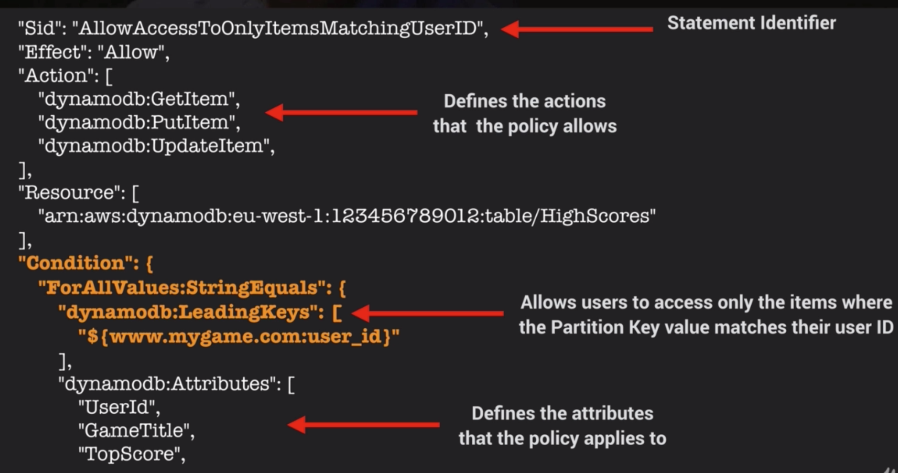

Dynamo DB
- A fast and flexible noSQL DB for applications that need consistent, single-digit millisecond latency at any scale.
- Fully managed DB, can be configured to autoscale, integrates well with Lambda.
- Supports both document and key-value data models
- Flexible data model and reliable performance.
- Stored on SSD
- Spread across 3 geographically distinct dat centres
- Choice of 2 consistency models:
- Eventual Consistent Reads (Default)
- Strongly Consistent Reads
Reads
Eventually Consistent Reads
Consistency across all copies of data is usually reached within a second. Repeating a read after a short time should return the updated data. (Best Read Performance)
Strongly Consistent Reads
A strongly consistent read returns a result that reflects all writes that received a successful response prior to the end
Structure
- Tables
- Items
- Attributes
- Supports key-value and document data structures
- Key = Name of the data, Value = Data itself
- Documents can be written in JSON, HTML or XML
Primary Keys
Dynamo DB Stores and retrieves data based on Primary Key - 2 Types:
Partition Key - unique attribute (e.g. user ID):
- Value of partition key is input to an internal hash function which determines the partition or physical location on which the data is Stored
- If you are using the partition key as your primary key, then no two items can have the same partition key.
Composite Key (Partition key + Sort Key) in combination:
- Primary key would be a composite key consisting of
- Partition Key - User ID
- Sort Key - Timestamp of Post
- 2 items may have the same Partition key, but they must have a different sort key.
- All items with the same Partition Key are stored together, then sorted according to the Sort key Value
- Allows you to store multiple items with the same Partition Key
Access Control
- Authentication and Access Control is managed using AWS IAM
- You can create an IAM user within your AWS account which has specific permissions to access and create DynamoDB tables.
- You can create an IAM role which enables you to obtain temporary access keys which can be used to access DynamoDB
- You can also use a special IAM Condition to restrict user access to only their own records
IAM Conditions Example
Imagine a mobile gaming app with millions of users: * Users need to access high scores for each game they are playing * Access must be restricted to ensure they cannot view anyone else’s data
This can be done by adding a Condition to an IAM Policy to allow access only to items where the Partition Key value matches their User ID.

Exam Tips - Dynamo DB
- DynamoDB is a low latency noSQL DB
- Consists of Tables Items and Attributes
- Supports both document and key-value data models
- Supported document formats are JSON, HTML, XML
- 2 types of Primary key - Partition Key and combination of Partition Key + Sort Key (Composite Key)
- 2 consistency models: Strongly Consistent / Eventually Consistent
- Access is controlled using IAM policies
- Fine grained access control using IAM Condition parameter:
dynamodb:LeadingKeysto allow users to access only the items where the partition key value matches their user ID
Useful Example Reference with PHP related scripts.
Sample CLI Commands
aws dynamodb get-item --table-name ProductCatalog --key '{"Id": {"N":"205"}}'
Index
In SQL DBs an index is a data structure which allows you to perform fast queries on specific columns in a table. You select the columns that you want included in the index and run your searches on the index - rather than the entire dataset.
Dynamo DB has two types of Index (even though its NoSQL): 1. Local Secondary Index 2. Global Secondary Index
Local Secondary Index
- Can only be created when you are creating your table
- You cannot add, remove or modify it later
- It has the same partition key as your original table
- But a different Sort Key
- Gives you a different view of your data, organized according to an alternative Sort Key
- Any queries based on this Sort Key are much faster using the index than the main table
- e.g. Partition Key: User ID, Sort Key: account creation date
Global Secondary Index
- You can create when you create your table, or add it later
- Different Partition Key as well as Sort Key
- Gives a completely different view of the data
- Speeds up any queries related to this alternative partition and sort key
- e.g. Partition Key: email address, Sort Key: last log-in date
Exam Tips - Indexes
- Enable fast queries on specific data columns
- Give you a different view of your data, based on alternative Partition / Sort Keys
- Important to understand difference
| Local Secondary Index | Global Secondary Index |
|---|---|
| Must be created at same time table is created | Can create at any time (including table creation) |
| Same Partition Key as your Table | Different Partition Key |
| Different Sort Key | Different Sort Key |
Query & Scan
Query
A query operation finds item in a table based on the Primary Key attribute and a distinct value to search for e.g. select and item where the user ID is equal to 212, will select all attributes for that name e.g. first name, surname, email etc.
- Use an optional Sort Key name and value to refine the results e.g. if Sort Key is a timestamp, you can refine query to only select items from last 7 days
- By default a query returns all the attributes for the items but you can use the ProjectionExpression parameter if you want the query to only return the specific attributes you want e.g. if you only want to see the email address rather than all the attributes
- Results are always sorted by the Sort Key
- Numeric order - by default in ascending order (1,2,3,4)
- ASCII character code values
- You can reverse the order by setting the ScanIndexForward parameter to false - (not this param is only related to queries no scan)
- By default, Queries are Eventually Consistent
- You need to explicitly set the query to be Strongly Consistent
Scan
A scan operation examines every item in the table.
- By default returns all data Attributes
- Use the ProjectionExpression parameter to refine the scan to return only the attributes you want
Query or Scan?
- Query is more efficient than a Scan
- Scan dumps the entire table, then filters out the values to provide the desired result - removing the unwanted data
- This adds an extra step of removing the data you don’t want
- As the table grows, the scan operation takes longer
- Scan operation on a larger table can use up the provisioned throughput for a large table in just a single operation
How to Improve Performance
- You can reduce the impact of a query or scan by setting a smaller page size which uses fewer read operations e.g. set the page size to return 40 Items
- Larger number of smaller operations will allow other requests to succeed without throttling
- Avoid using scan operations if you can: design tables in a way that you can use Query, Get, or BatchGetItem APIs
- By default, a scan operation processes data sequentially in returning 1MB increments before moving on to retrieve the next 1MB of data. It can only scan one partition at a time.
- You can configure DynamoDB to use Parallel scans instead by logically dividing a table or index into segments and scanning each segment in parallel
- Best to avoid parallel scans if your table or index is already incurring heavy read / write activity from other applications
Exam Tips - Scan -v- Query
- A Query operation finds items in a table using only the Primary Key attribute -> You provide the primary key and a distinct value to search for
- A scan operation examines every item in the table -> By default returns all data attributes
- Use the ProjectionExpression parameter to refine the results
- Query results always sorted by Sort Key (if there is one)
- Sorted in ascending order
- Set ScanIndexForward parameter to false to reverse the order - queries only
- Query operation is generally more efficient than a Scan
- Reduce the impact of a query of scan by setting a smaller page size which uses fewer read operations
- Isolate scan operations to specific tables and segregate them from your mission-critical traffic
- Try Parallel scans, rather than the default sequential scan
- Avoid using scan operations if you can: design tables in a way that you can use the Query, Get, or BatchGetItem APIs
Provisioned Throughput
Dynamo DB Provisioned Throughput is measure in Capacity Units.
- When you create your table, you specify your requirements in terms of Read Capacity Units and Write Capacity Units
- 1x Write Capacity Unit = 1x 1KB write per second
- 1x Read Capacity Unit = 1x Strongly Consistent Read of 4KB per second OR 2x Eventually ConsistentReads of 4KB per second (Default)
Strongly Consistent Reads Calculation
Your application needs to read 80 items (table rows) per second. Each item is 3KB in size. You need Strongly consistent reads.
- First: Calculate how many Read Capacity Units needed for each read: size of each item / 4KB i.e. 3KB/4Kb = 0.75. Rounded up to the nearest whole number, each read will need 1x Read Capacity Unit per read operation.
- Multiplied by the number of reads per second = 80 Read Capacity Units required
Eventually Consistent Reads Calculation
- Same as above BUT 2x 4KB reads per second - double the throughput of Strongly Consistent Reads
- 3KB/4KB = 0.75, round to nearest whole number = 1
- Multiply by number of reads per second = 80
- Divided 80 by 2, only need 40 read capacity units for Eventually Consistent Reads
Write Capacity Unit Calculation
You want to write 100 items per second. Each item 512 bytes in size
- First: Calculate how many Capacity Units for each write: Size of each item /1KB (for Write CU) 512 bytes / 1KB = 0.5
- Round to nearest whole number = 1 Write Capacity Unit per write operation operation
- Multiplied by number of writes per second = 100 Write Capacity Units required
Exam Tips - Provisioned throughput
- Measured in Capacity Units
- 1x Write Capacity Unit = 1x 1KB Write per Second
- 1x Read Capacity Unit = 1x 4KB Strongly Consistent Read OR 2x 4KB Eventually Consistent Read
On Demand Capacity
- Charges apply for: Reading, Writing, Storing data
- Don’t need to specify your requirements
- DynamoDB instantly scales up and down based on the activity of your application
- Great for unpredictable workloads
- You want to pay for only what you use (pay per request)
Which Pricing Model to Use
| On-Demand Capacity | Provisioned Capacity |
|---|---|
| Unknown Workloads | Forecast read & write capacity requirements |
| Unpredictable Application Traffic | Predictable Application Traffic |
| Want Pay-Per-Use Model | App traffic is consistent or increases gradually |
| Spikey/Short-lived Projects |
DynamoDB Transactions
- ACID Transactions (Atomic, Consistent, Isolated, Durable)
- Read or write multiple items across multiple tables as an all or nothing operations
- Check for a pre-requisite condition before writing to a table
DynamoDB TTL
- TTL attribute defines an expiry time for your data
- Expired items marked for deletion
- Great for removing irrelevant or old data:
- Session data
- Event logs
- Temporary data
- Reduces cost by automatically removing data which is no longer relevant
- TTL expressed as epoch time i.e. when current time > TTL item expired and marked for deletion
Sample Commands
# ensure you have right IAM role & access permissions
aws iam get-user
# create sessiondata table
aws dynamodb create-table --table-name SessionData --attribute-defintiions \
AttributeName=UserID,AttributeType=N --key-schema \
AttributeName=UserID,KeyType=HASH \
--provisioned-throughput ReadCapacityUnits=5,WriteCapacityUnits=5
# populate SessionData table
aws dynamodb bach-write-item --request-items file://items.json
DynamoDB Streams
Time-ordered sequence of item level modifications (insert, update, delete)
- Logs are encrypted at rest and stored for 24hrs
- Accessed using a dedicated endpoint
- By default the Primary Key is recorded
- Before and After images can be captured
Processing Streams
- Events are recorded in near real-time
- Apps can take actions based on contents of stream
- Event source for Lambda
- Lambda polls the DynamoDB Stream
- Executes Lambda code based on a DynamoDB Streams event
Exam Tips - DynamoDB Streams
- Time-ordered sequence of item level modifications in your DynamoDB Tables
- Data is stored for 24 hours only
- Can be used as an event source for Lambda so you can create applications which take actions based on events in your DynamoDB table
Provisioned Throughput Exceeded & Exponential Backoff
ProvisionedThroughputExceededException
- Your request rate is too high for the read/write capacity provisioned on your DynamoDB table
- SDK will automatically retries the requests until successful
- If you are not using the SDK you can:
- Reduce request frequency
- Use Exponential Backoff
Exponential Backoff
- Many components in a network can generate errors due to being overloaded
- In addition to simple retries all AWS SDKs use Exponential Backoff
- Progressively longer waits between consecutive retries e.g. 50ms, 100ms, 200ms for improved flow control
- If after 1 minute this doesn’t work, your request size may be exceeding the throughput for your read/write capacity
Exam Tips - Provisioned Throughput & Exponential Backoff
- If you see a ProvisionedThoguhputExceeded Error, this means the number of requests is too high
- Exponential Backoff improves flow by retrying requests using progressively longer waits
- This is not just true for DynamoDB, Exponential Backoff is a feature of every AWS SDK and applies to many services within AWS e.g. S#, CloudFormation, SES